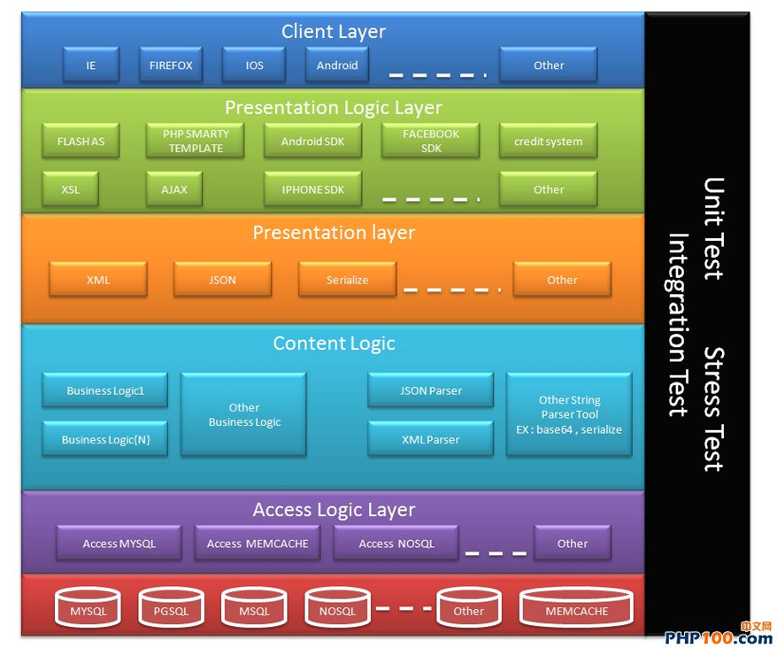
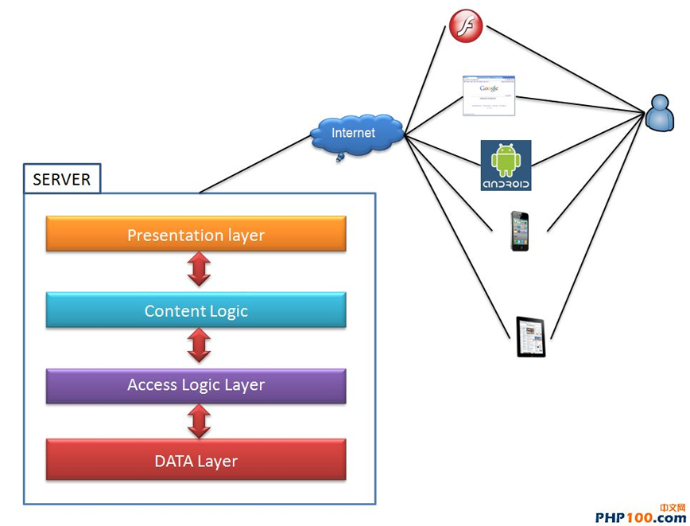

专业的网站建设团队
创意设计与用户体验的完美结合


专业的网站建设团队
创意设计与用户体验的完美结合


咨询动态>
最新资讯>
PHP系统设计与云架构


这几年我比较少写 PHP 了.
有阵子很迷它, 但是因为工作关系, 把较多的时间花在网络封包和数据库的分析工作上.而且因为年记较大了所以也很难找到写程序的工作多半都在做工程师的 “工头”对于这几年 PHP 的变化我来不及参与.在这裡收集这几年对 PHP 的变化, 写篇心得过过本人自己的乾隐:回顾您以往的职业生涯, 您有好好的管理您写的 CODE 吗?还是每次都写到需求超级肥大了, 才延伸出一大堆的程序码管理问题.在这裡本人设计一个开发框架的架构, 让你的程序更简洁而且让你的程序更有条有理的被应用.当然这些架构教程我己经简化很多, 如果放入太多的设计反而会得到反效果.如果您是比较重口味的 PHP 设计者, 先说声报歉了.如果您常为了需求肥大难以管理你的程序,这篇文章对您来说会是个值得参考的文章, 至少它有著我十几年的需求开发经验.
在往下教程下去前, 本人先定义一些名词, 以方便大家接下去阅读教程.
DB :这一块不用多介绍, 我相信大家对 DB 的经验独道, 我们直接跳过去.
Access Layer :这一块全部都是放一些 Access Logic 在裡头, 主要的工作是负责跟 DB 还有 MEMCACHE 沟通, 你可以使用现成的开发框架达成这一层的目地, 也可以自己开发.但是这些逻辑建议您都保留在这一层.MEMCACHE:这一块主要是做为分散式架构的存取层,大家有没有注意到一件事?它是走 TCP 11211 PORT .它可以用在什麽地方?
a.让你可以把从 DB 的资料捞到快取一份到 MEMCACHE ,来减轻资料库的工作负担, 这在大型而且流量很高的系统上, 它辨演很重要的角色就是可以减轻 DB 的工作量.我们这裡不多介绍 Memcahe 的使用及方式, 您可以多参考官方网站或其它网络上的教程.
b.有一些不用储存用完就不要的资料, 也可以利用 memcache 直接存取不用再交给 DB 去处理.
c.注意一件事:在过去裡我的下属们在使用它时常会犯一个错就是烂用 Memcache ,
memcache 本身是一个 TCP 的服务在单台 linux 伺服器下最多只能使用1024个请求, 当然你可以用 ulimit 提高它, 但是请先了解它的本质用对地方.它本身并不能做为程序本身加快程序效能的工具, 但是它是一个可以做到分散式的存取架构, 并且可以减轻 DB 负担的工具, 的好用工具.所以在使用它时要选对时机, 千万不要烂用.
Access Layer :这一层的工作主要是存取资料层的逻辑, 我将会2.会有更详细的说明.
Content Logic Layer :这一层的工作主要是负责处理存取层从 资料层要来的资料的逻辑, 我将会3.会有更详细的说明.
Presentation Layer :这一层的工作意义重大, 它主要是标准化 Presentation Logic 与 Content Logic Layer 沟通的标准，让你的画面逻辑不会愈来愈肥大及复杂, 我将会4.会有更详细的说明.
Presentation Logic Layer :这一层的工作是做为让 你的画面逻辑可以采用标准化的介面来与伺服器沟通, 如果 Presentation Layer 标准化了, 你的画面逻辑的可重覆利用性就会更高及有弹性, 我将会5.会有更详细的说明.
Client Layer :这一层就是我们平时便用的浏览器,云端服务等等的应用, 相信大家非常了解这一层可以做到的事, 所以我们就不多介绍 Client Layer 了.
到这裡我们必需要将图裡的方块切的更细让大家理解请耐心的看完下一张图:
Access Logic Layer 主要的工作是做为与 DB 和 Content Logic 沟通的区块, 在这裡本人建议大家在设计物件库或函式库前, 先参考这个架构.
把所有跟资料库存取的逻辑全部包装在这个区块下, 例如大家在设计DB时最爱用 Factory 来做 DB 的切换, 同时把这些逻辑全部整到这一层让您的程序更有层次更好管理.
看到这裡大家一定对一些使用 Factory 设计的 OOP DB 存取函式库不漠生.
这时我要介绍大家一个名词, Object-relational_mapping :
http://en.wikipedia.org/wiki/Object-relational_mapping
什麽地方有 ORM ?就是大家常用的.
CAKE PHP
ZEND FRAMEWORK.
Doctrine
Propel
CoughPHP
Symphony
当然…您也可以自己写, 重点是, 要懂得怎麽有效率的去管理你的存取层的逻辑.
而一但定义了这一层.
强烈建议在接下来的 Content Logic Layer , Presentation Logic Layer 严格禁止其它逻辑层的逻辑跳过它来存取资料库.
这麽做有什麽好处? :
1.确保其它工作者不会写出不良的DB存取逻辑造成你的系统不好维护
2.你可以不用再担心会有严重的存取层 BUG
3.它在使用上变的更安全, 不会让你的资料库暴露在 Content & Presentation Logic Layer ,让你的 DB 有一定程度的保障.
4.如果你的 ORM TOOL 有提供管理器, 你还可以把所有的 SQL 语法倒出来检示有没有什麽存取过重的语法.
5.最重要的!!你可以把常用的存取层资料跟 MEMCACHE 做有效的资源管理, 让你的 DB 的资源更有效的被利用!!
补充说明:
Access MYSQL :资料库的新增改查逻辑全部放在这.
Access Memcache :与 MEMCACHE 存取的新增改查逻辑全部放在这.
Access NOSQL :现在最流行的 NOSQL ,你可以分别的去包装你要的逻辑在这裡面.
Other :如果你有别的使用资料存取的逻辑, 可以参造上述的方式一一的去整理….
这一层有什麽东西?
1.你们服务用的到的商业逻辑, 你可以把每个商业逻辑用 OOP 设计, 并且放在这一块, 以利日后的管理.
2. String Parser :
为什麽在这篇教程裡我会建议您设计这块? 因为它必需满足 Presentation Layer 要求的几个素求:
1.一致性高,2.可重覆利用性高, 3.跨平台性高,4.云端应用, 所以大家不要关掉文章快点看到3.怎麽让你的系统可以符合这四个素求.
3.表示层:
我为何在这篇教程裡, 放入了这一层的应用?
这要回顾到10年前, 我入手了一本 Wrox 的 Professional PHP4.
这本书我印象深刻, 因为它一共有十一个作者在写: 当时看到它有一篇单元 “多层式架构开发” ,让我对整个 WEB 架构开发的视野完全打开.
不过我得承认我以前很嘴贱, 常说 SMARTY TEMPLATE 是玩具.
PS : SMARTY TEMPLATE 采用 tpl php var 的方式来做少了这一层,常会极端的用些言语说它不好.
你可以参考这二本书, 会发现这一层放入这个设计会让你未来工作变的轻松很多.
http://www.amazon.com/Profession … homas/dp/1861006918
http://www.amazon.com/Profession … p;keywords=PHP4+XML
#回到正题-
这一层专门用来处理 Content Logic Layer 处理好的资料, 利用 XML , JSON 等标准化的介面语言, 来规范你的 Content Logic Layer 按照你的 Convention (规范)来吐出资料给 Presentation Logic Layer
也因为这样, 你的 Presentation Layer 有著标准化的格式, 所以你在使用 AJAX , AS , PHP SDK 等…做画面逻辑串接时,
你的画面逻辑的程序将会变的一致性很高, 因为都是参考同样的格式, 让你的画面逻辑的程序不会乱长.工程师因为熟悉相
同的介面格式, 工作起来将会非常的轻松.
在你享受 Presentation Layer 有著标准化的格式的好处时, 你会发现,你可以把画面逻辑也整理起来重覆利用,
这时你会发现你少写好多好多的程序码.
例如: 换页逻辑, 表单的呈现………..等等等, 只要另外塞 CSS 进来就好了. 根本不用写什麽程序.
啥咪?还有.是的!!!大家记得 RSS 吗? RSS就是利用了 Presentation Layer 这个特性让各种平台都可以串接 BLOG 的文章内容, 让你的系统有著强大的夸平台性整合能力.
是的即然跨平台性高了, 也就是你完成这个需求的同时, 你所有的系统内容的呈现可以丢给任何云端平台的整合!
这个设计, 会让你的系统架构非常灵活, 灵活到什麽程度?
以往一组新增/修改/删除/换页/搜寻, 只要写完一次而且完整的从下到上每一层整合上来.
我几乎不用二次开发, 直接套用之前写好的 content Logic , Presentation Logic 就可以完成一个需求.
一天可以完工三十几组新增/修改/删除/换页/搜寻的串接, 所以我当时消耗需求的速度比起一般没有用这个设计技巧快上非常的多.
而大家心裡会有疑问, 这不就是以前 RUBY & CAKE PHP 的特性吗?是的!!就这个理念!
不过有差异, 就是 CAKE PHP 在做画面逻辑时, 它并不会真的把这层切开, 而是将 MVC 裡的 V 和 C 有效化的重覆利用, 但是一但要使用云端应用和夸平台时,
之前写过的程序无法直接透过 Presentation Layer 拉出去给第三方平台做串接.
虽然省了 ORM 那一层的重覆开发, 但是 Content Layer 和 Presentation Layer 还是要在手工调整的.
而一但一调整, 就会产生, DEBUG ,开发, 稳定性, 和你又多了一堆CODE 要维护的工作….
这一层讲起来轻松多了, 因为大家己经有了非常多的 AJAX , XSL , FACEBOOK SDK , IOS , ANDROID , FLASH AS 的串接经验.
没错, 这裡就是把之前辛苦定义并且做好的 Presentation Layer 吐出来的格式做应用.
你可以透过~HTTP , SOCKET SERVER 等等..将你的 Presentation Layer 的 JSON , XML 吐出来, 并且交给你的画面逻辑程序去串接.
这麽一来你也轻松完成了一个云端的整合介面, 让你写的 PHP 可以广泛的使用在任何不同的平台上.
在我开发每一层的元件时, 我都会要求工程师, 做单元测试(UNIT TEST), 压力测试( Stress Test ), 整合测试( Integration Test )
a.单元测试(UNIT TEST): 你可以使用 PHPUNIT 或是自己写, 针对你的一个函数的进和出的测试, 并且预先写好 TEST CASE ,确保每一层的函式库都是非常稳定而且没有问题的, 来让你管理程序的品质.
b.压力测试(Stess TEST): 针对每一个函式库的逻辑, 在做 UNIT TEST 的同时, 将 STRESS TEST 的 TEST CASE 喂进去, 并且记录每一个函式处理 TEST 所消耗的时间.
c.整合测试(Integration Test): 你可以写一支程序, 做 DAILY BUILD 每天去检查所有程序设计师 COMMIT 到 SVN 的程序码是否有问题, 确保每个函式之间整合是正常的, 降低 DEBUG 的工作量.

我们全心全意为你提供最优质的服务
www.wengdo.cn
分享文章到：


020-66668888

3163908267

人才招聘

返回顶部